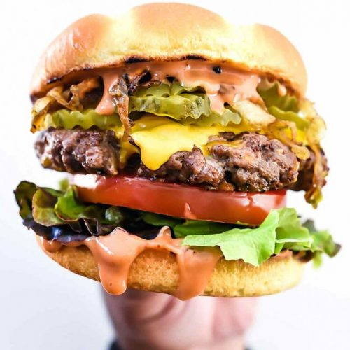

Mr. Brosius' Favorite Recipes
Cheese Burger

Ingredients
Directions
1 lb Hamburger
Fry in pan
Sliced Cheese
Place cheese when burger is almost done.
Bun
Take out of bag
The American Cheese Burger is a classic dish found throughout the United States